Ssm
Spring ：企业级一站式框架
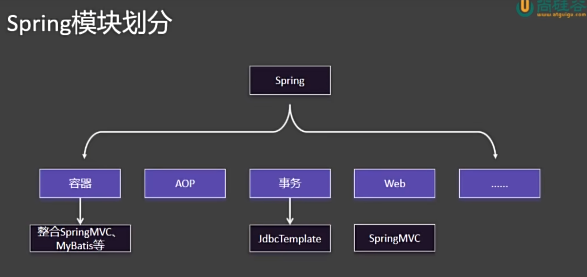
一、Container
1. 组件和容器
组件：具有一定功能的对象，组件的三大特性：(名字、类型)、对象、作用域，组件的名字是全局唯一的。在Spring中，组件的创建时机是容器启动过程中，单实例特性：每次获取直接拿就完事了。
容器：管理组件（创建、获取、保存、销毁）
2. IOC 控制反转
IOC 是一种设计思想，不是具体的技术。它的核心理念是：将对象的创建和依赖管理交给外部容器控制，而不是由对象自己控制。
传统方式下，一个对象主动去创建它所依赖的对象； 而在 IOC 模式下，对象被动地接收依赖对象（由容器提供）。
“控制” 指的是对象依赖的创建与管理。“反转”指的是这种控制权从程序员手中反转给了外部容器（如 Spring 容器）。
3. DI 依赖注入
DI 是实现 IOC 的具体手段。 即：容器在运行时将对象所依赖的实例“注入”进去。
4. 注册组件的不同方法
4.1 @Bean
1. 概念
@Bean 是 Spring 中的一种 显式注册 Bean 的方式，用于告诉 IOC 容器：“我要手动定义并注册一个组件（Bean）到容器中进行管理。” 换句话说，使用 @Bean 标注的方法会由 Spring 调用，其返回对象会被加入到 IOC 容器中，并由容器统一管理生命周期和依赖关系。
2. 主要作用
1）注册 Bean 到容器：通过 @Bean 标注的方法返回的对象，会自动成为 Spring 管理的 Bean。
2）代替 XML 配置：在注解驱动的配置类中，用 @Bean 方法代替 <bean> 标签进行配置。
3）自定义第三方类的注入：当某个类不是由我们自己编写（例如外部库中的工具类），无法直接加上 @Component 注解时，就可以通过 @Bean 手动注册。
3. 获得组件的方法
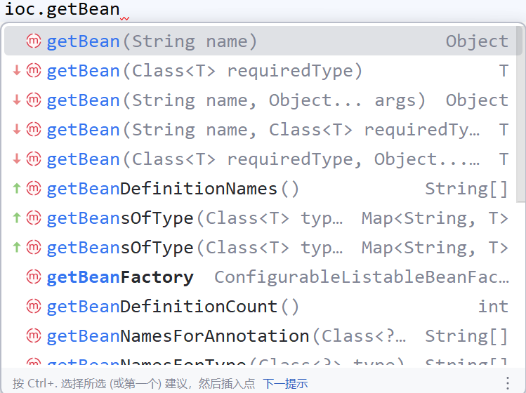
// 按照组件名称获取组件对象
Student ltb = (Student) ioc.getBean("LiuTianBa");
System.out.println("ltb " + ltb);
// 按照组件类型获取组件对象
Dog dog = ioc.getBean(Dog.class);
System.out.println("bean = " + dog);
// 按照名字加类型，就不需要强转了
4.2 @Conguration注解
@Configuration 是 Spring 中的一个注解，用于标记一个类为配置类。它告诉 Spring 容器：这个类包含一个或多个 @Bean 注解的方法，这些方法将返回需要被 Spring 容器管理的对象（即 Bean）。Spring 会处理这个类，执行其 @Bean 方法，并将返回的对象注册到 IoC 容器中，以便后续依赖注入和使用。
相当于传统的 XML 配置文件（如 applicationContext.xml），只不过现在用 Java 类来编写配置，类型安全、易于调试和重构。
4.3 MVC分层注解
用 @Bean 手动注册组件太麻烦，所以 Spring 提供了一些特殊类的快速注册。注：分层注解能起作用的前提是：这些类必须在主程序所在的包及其子包的程序下。如果非要放到外部包，在主程序上加个ComponentScan实现批量扫描。（但最好还是老老实实的在主程序所在包下面玩）
1. @Controller
用于标记控制层（Controller）的类，表示该类是 Spring MVC 中的控制器组件，负责处理 HTTP 请求。被此注解标记的类会被 Spring 容器自动扫描并注册为 Bean。
2. @Service
用于标记业务逻辑层（Service）的类，表示该类是服务组件，通常包含核心业务逻辑。它是一种特殊的 @Component，语义更明确，便于分层管理。
3. @Repository
用于标记数据访问层（DAO/Repository）的类，表示该类负责与数据库进行交互。该注解还具有自动翻译数据库异常的能力（如将 SQLException 转为 Spring 的数据访问异常），使数据层异常处理更统一。
4.4 注册第三方组件
有两个方法，一是直接用@Bean注解去手动的new一个对象并返回，二是@Import注解去注册第三方类对象。
4.5 @Scope
@Scope 是 Spring 中的一个注解，用于指定由 @Component 或 @Bean 等注解创建的 Bean 实例在 Spring 容器中的作用域（即生命周期和可见范围）。具体而言，它是用来控制一个 Bean 是单例的、每次请求都新建的，还是与 Web 中的请求、会话等绑定的。
常见取值
- singleton（默认）：在整个 Spring 容器中，该 Bean 只有一个共享的实例。
- prototype：每次请求该 Bean 时（如注入或调用
getBean()），都会创建一个新的实例。 - request：每个 HTTP 请求创建一个实例，仅适用于 Web 应用。
- session：每个 HTTP Session 创建一个实例，仅适用于 Web 应用。
- application：每个 ServletContext 生命周期内创建一个实例，仅适用于 Web 应用。
4.6 @Lazy
它指示 Spring 容器在启动时不立即创建被标记的 Bean，而是等到该 Bean 第一次被实际使用（如注入、调用 getBean()）时才进行初始化。
默认情况下，Spring 容器在启动时会预初始化所有 singleton 作用域的 Bean。@Lazy 可用于类上（配合 @Component 等）或方法上（配合 @Bean）。
prototype作用域的 Bean 本身就是懒加载的，每次使用都会新建。懒加载的 Bean 在第一次使用时会有初始化开销，可能影响响应时间。
4.7 FactoryBean接口
FactoryBean 是 Spring 提供的一个接口，用于自定义复杂对象的创建过程。
当某个 Bean 的实例化过程比较复杂（例如需要动态代理、组合多个对象、读取配置生成等），无法通过简单的构造函数或工厂方法完成时，可以通过实现 FactoryBean 接口来精确控制 Bean 的创建逻辑。
- 实现 `FactoryBean` 的类本身也是一个 Bean，会被 Spring 容器管理。
- 从容器中获取该 Bean 时，默认返回的是 `getObject()` 方法的返回值，而不是 `FactoryBean` 实例本身。
- 若想获取 `FactoryBean` 本身，需在 Bean 名称前加 `&`，如 `context.getBean("&myFactoryBean")`。
4.8 @Conditional 条件注册
@Conditional 是 Spring 中的一个注解，用于实现条件化注册 Bean。它可以根据指定的条件来决定是否将某个 Bean 注册到 Spring 容器中。只有当条件满足时，对应的组件（类或方法）才会被加载和实例化。
1. 核心机制
@Conditional接收一个或多个Condition接口的实现类。- Spring 在解析配置时会先检查这些条件的
matches()方法返回值。 - 如果返回
true，则注册 Bean；否则跳过。
2. 衍生注解
@ConditionalOnClass：当类路径中存在指定类时才注册。@ConditionalOnMissingBean：当容器中不存在指定类型的 Bean 时才注册。@ConditionalOnProperty：当配置文件中存在特定属性且值符合条件时注册。@ConditionalOnWebApplication：当应用是 Web 环境时注册。@ConditionalOnExpression：根据 SpEL 表达式结果决定是否注册。
5. 注入组件的各种方式
1. @Autowired
@Autowired 是 Spring 提供的注解，用于自动装配 Bean。它可以标记在字段、构造函数、Setter 方法或普通方法上，Spring 容器会自动从 IoC 容器中查找匹配的 Bean 并注入。
装配流程：
1）先按类型找，找到了就注入
2）若按类型没找到或者找到了多个，就按组件的名字来找（就是把当前的对象名看作是组件名，然后去ioc容器找）
3）若未找到匹配的 Bean，默认会抛出异常
匹配规则
- 默认按**类型**（byType）进行匹配。
- 如果同一类型存在多个 Bean，则结合 `@Qualifier` 注解按名称（byName）区分。
- 若未找到匹配的 Bean，默认会抛出异常；可设置 `required = false` 允许为 null。
# 可以自动装配很多
@ToString
@Controller
public class UserController {
// 自动注入演示
@Autowired
UserService userService;
@Autowired(required = false)
Person bill;
@Autowired
List<Person> arr;
@Autowired
Map<String, Person> map;
@Autowired
ConfigurableApplicationContext ioc;
}
小拓展：@Qualifier("beanname") 可以指定要注入的组件名称（新版本直接用变量名就可以了） @Primary 就是把某个 @Bean 标记的方法返回的组件标为一个特殊的Bean（默认组件），以后主动注入时如果有多个该类型的组件，就用这个特殊的来注入。
特别的，当我们开启了默认组件后，在想用其他的，就得靠@Qualifier了，此时该属性名不能实现组件的切换了。
2. @Resource
@Resource 是 JSR-250 规范提供的注解，用于实现依赖注入。它并非 Spring 特有，但被 Spring 容器支持。
装配流程：
1）默认按名称（byName）进行匹配。即使用字段名或方法名作为 Bean 的名称去查找。
2）如果找不到对应名称的 Bean，则退回到按类型（byType）匹配。
3）可通过 name 属性显式指定要注入的 Bean 名称：@Resource(name = "userService")。
与 @Autowired 的区别
1）@Resource 是 Java 标准注解，@Autowired 是 Spring 特有。
2）@Resource 优先按名称注入，@Autowired 默认按类型注入。
3）@Resource 不支持 required = false 语法。
3. 构造器注入（无注解）
概念：在 Spring 配置类或组件中，通过构造函数的参数来接收依赖对象的注入方式。当类中只有一个构造函数时，Spring 会自动将其参数作为依赖进行注入，无需添加 @Autowired 注解。
作用：实现依赖的强制注入，确保对象创建时所需的所有依赖都已提供，从而保证对象的完整性与不可变性。
特点：
1）无需注解：Spring 4.3+ 版本开始，若类中只有一个构造函数，可省略 @Autowired。
2）推荐使用：构造器注入是 Spring 官方推荐的依赖注入方式，有利于实现不可变对象，便于单元测试。
3）依赖明确：所有必需的依赖都在构造函数中声明，代码可读性强。
4. Setter 方法注入
通过类的 setter 方法将依赖对象注入到 Bean 中。通常配合 @Autowired 注解使用，Spring 容器在实例化对象后，会自动调用对应的 setter 方法完成依赖注入。
5. AwareXXX 感知接口
Aware 接口是 Spring 提供的一系列以 Aware 结尾的接口，用于让 Bean 感知并获取 Spring 容器或其内部组件的底层资源。
作用：当一个 Bean 实现了某个 Aware 接口后，Spring 容器会在初始化该 Bean 时，自动调用其提供的回调方法，将对应的运行时对象注入进去，从而让 Bean 能够访问容器的内部服务。
// 常见 Aware 接口
- `ApplicationContextAware`：获取 `ApplicationContext` 容器本身。
- `BeanFactoryAware`：获取 `BeanFactory` 工厂实例。
- `BeanNameAware`：获取当前 Bean 在容器中的名称。
- `EnvironmentAware`：获取 `Environment` 对象，用于读取配置环境（如 profile、properties）。
- `ResourceLoaderAware`：获取 `ResourceLoader`，用于加载资源文件。
- `ApplicationEventPublisherAware`：获取事件发布器，用于发布自定义事件。
6. @Value
@Value 是 Spring 提供的一个注解，用于将外部值注入到 Bean 的字段(非组件的字段，组件可以通过Autowired自动注入)或方法参数中。
作用：实现配置属性、字面量、SpEL 表达式的注入，使代码可以动态获取配置信息，而不必硬编码。
注入方式：
1）直接@Value(字面量)
2）从配置文件中获取数据：@Value("${key}")
3）SpEL（Spring Expression Language）表达式
@Value("#{systemProperties['user.home']}")
private String userHome;
@Value("#{T(java.lang.Math).random() * 100}")
private double randomValue;
综合演示：
public class Cat {
@Value("Tom")
private String name;
@Value("12")
private Integer age;
@Value("${cat.color}")
private String color;
@Value("#{T(java.util.UUID).randomUUID().toString()}")
private String id;
}
7. @PropertySource
@PropertySource 是 Spring 提供的一个注解，用于将外部的 properties 配置文件加载到 Spring 的 Environment 抽象中。
补充知识：类路径找资源方式
classpath: 代表自己当前项目的类路径（java以及resources)
classpath*: 从所有包的类路径下面找
在Spring中，提供了资源获取工具类：ResouceUtils 来获取文
8. @Profile
实际也是 @Conditional 的一种，场景：当我们有多个数据源，也就是开发、测试、生成这三套，如果我们用 @Primary 或者@Qualifier，则需要修改代码，但用 @Profile 可以输入一个环境表示，从而根据不同的环境表示来注册组件。
具体使用：
1）先定义环境表示，默认是 ”default“ ：自定义方法就是去资源文件下面定义。 spring.profiles.active=生产环境
2）使用 @Profile 来实现条件注册
6. 组件生命周期
Spring 容器中每个 Bean 都有其完整的生命周期，从创建、初始化、使用到销毁。Spring 提供了多种机制让开发者可以在特定生命周期阶段插入自定义逻辑。
第一种：通过 @Bean 注解去指定 init 以及 destory。
第二种：去实现 InitializingBean 以及 DisposableBean
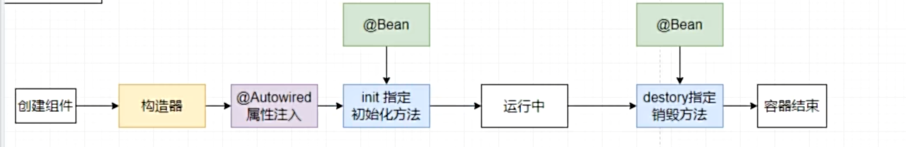
具体生命周期如下：
1、实例化（Instantiation） ：Spring 容器根据配置或注解创建 Bean 的实例（通过构造函数或工厂方法）。
2、属性赋值（Populate Properties）：容器将配置中定义的属性值或依赖对象注入到 Bean 中（如通过 @Autowired、@Value 等）。
3、初始化（Initialization）
- 补充: 调用后置处理器的前置操作
- 调用 `@PostConstruct` 注解的方法。
- 调用 `InitializingBean` 的 `afterPropertiesSet()` 方法。
- 调用自定义的初始化方法（通过 `@Bean(initMethod = "init")` 指定）。
- 应用 BeanPostProcessor 的 `postProcessBeforeInitialization` 和 `postProcessAfterInitialization`。
4、使用（In Use）：Bean 已准备好，可以被其他组件使用或对外提供服务。
5、销毁（Destruction）：
- 调用 `@PreDestroy` 注解的方法。
- 调用 `DisposableBean` 的 `destroy()` 方法。
- 调用自定义的销毁方法（通过 `@Bean(destroyMethod = "cleanup")` 指定）。
- 仅适用于 singleton 作用域的 Bean，在容器关闭时执行。
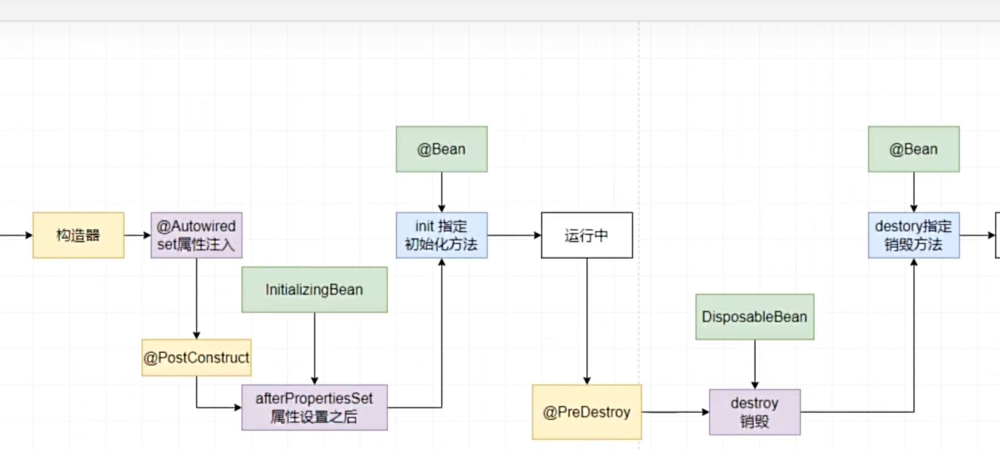
7. BeanPostProcessor
之前 Bean 的生命周期其实只是在人家初始化完，或者销毁前让你做点其他的，而不能影响这个过程。
而 BeanPostProcessor 能够在生命周期过程中正在的修改这个 Bean。
二、AOP ⭐
概念：Aspect Oriented Programming（AOP）是 Spring 框架的重要特性之一，它允许开发者将横切关注点（如日志、事务、安全、缓存等）与核心业务逻辑分离。
本质：AOP 的底层实现原理确实是代理模式。Spring 在运行时为目标对象创建一个代理对象，当调用目标方法时，实际执行的是代理对象的方法。代理对象可以在目标方法执行的前后，甚至环绕执行自定义逻辑，从而实现功能增强。
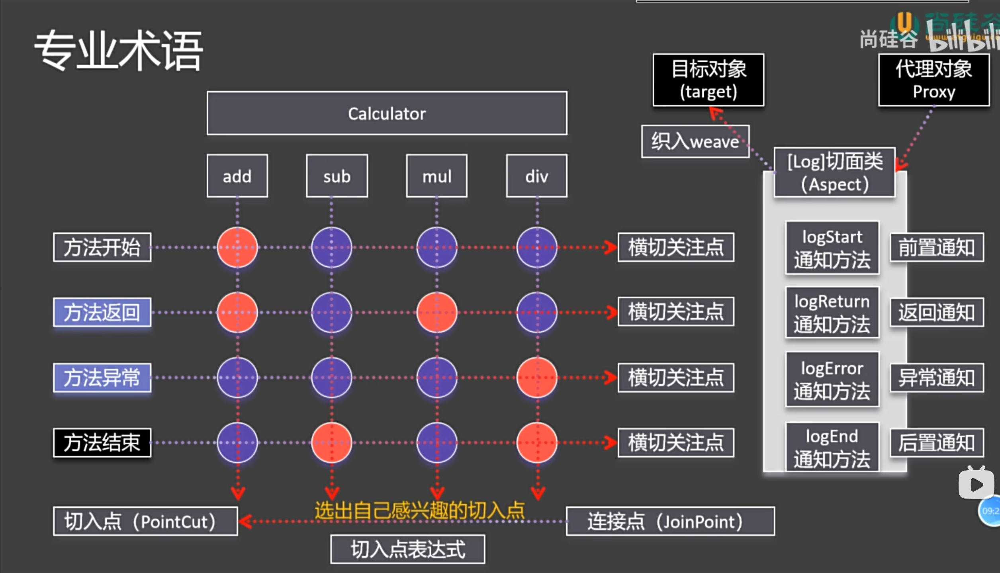
1. AOP 编码实现
1）导入 AOP 依赖
<dependency>
<groupId>org.springframework.boot</groupId>
<artifactId>spring-boot-starter-aop</artifactId>
</dependency>
2）编写切面 Aspect 注：记得用 @Aspect 来标注切面类
3）编写通知方式
4）指明这些通知方法何时何地运行（切入点表达式） 注：可以将这些表达式抽离出来
// 切入点表达式抽离
@Pointcut("execution(* person.liutianba.spring02Aop.calculator.MathCal.*(..))")
void pointCut(){}
@Before("pointCut()")
public void logStart(JoinPoint joinPoint){
System.out.println("【切面 - 日志】开始... 方法名:" + joinPoint.getSignature().getName() + "参数为：" + Arrays.asList(joinPoint.getArgs()).toString());
}
5）测试AOP动态织入
@Aspect // 切面类
@Component
public class LogAspect {
/**
* 告诉 Spring，以下通知方法何时何地运行
* 何时：
* @Before,
* @After(不管正常异常，都运行),
* @AfterReturning(正常返回结果),
* @AfterThrowing(出现异常),
* @Around
*
* 何地：切入点表达式
* execution(方法的全签名)
* 全写法 ：public int 全类名.方法名(参数列表) throws 异常
* 省略写法：int 方法名(参数列表) int *(int, int)
* * 表示任意长度字符串
*
*/
@Before("execution(int *(int,int))")
public void logStart(){
System.out.println("【切面 - 日志】开始...");
}
@After("execution(int *(int,int))")
public void logEnd(){
System.out.println("【切面 - 日志】结束...");
}
@AfterThrowing("execution(int*(int, int))")
public void logException(){
System.out.println("【切面 - 日志】异常...");
}
@AfterReturning(pointcut = "execution(int *(int, int))", returning = "result")
public void logReturn(Object result){
System.out.println("【切面 - 日志】结果：" + result);
}
}
2. AOP 切入点表示式写法
切入点（Pointcut）用于定义 哪些方法需要被 AOP 增强。它是通过一个表达式来匹配类和方法的，只有匹配成功的方法才会执行通知（Advice）。
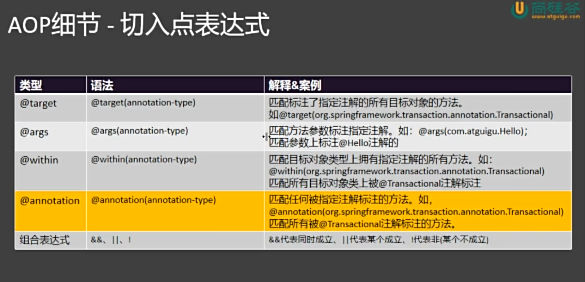
1. excution(方法签名)
切入某个接口下的所有方法：execution(* person.liutianba.spring02Aop.calculator.MathCal. ***(..))
注：只要有了切面类再切入，那么这个类的实例在容器中就不再是原本的类型了，而是CGLIB产生的一个代理对象。
/**
* 告诉 Spring，以下通知方法何时何地运行
* 何时：
* @Before,
* @After(不管正常异常，都运行),
* @AfterReturning(正常返回结果),
* @AfterThrowing(出现异常),
* @Around
*
* 何地：切入点表达式
* execution(方法的全签名)
* 全写法 ：public int 全类名.方法名(参数列表) throws 异常
* 省略写法：int 方法名(参数列表) int *(int, int)
* *：表示任意长度字符串
* ..：
* 1）参数位置：表示多个参数，任意类型
* 2）类型位置：表示多个层级
* @annotation(com.spzx.common.security.annotation.RequiresLogin) || "
+ "@annotation(com.spzx.common.security.annotation.RequiresPermissions)
*
*
*
*/
2. args
匹配那些参数列表一直的所有方法
3. @args
匹配参数列表有特定注解的方法
3. 获取 AOP 的连接点的信息
直接传一个连接点，然后通过它获得信息。
一般就是通过getSignature（）获得方法签名，然后通过方法签名就可以获得该方法的详细信息。
@Before("execution(* person.liutianba.spring02Aop.calculator.MathCal.*(..))")
public void logStart(JoinPoint joinPoint){
System.out.println("【切面 - 日志】开始... 方法名:" + joinPoint.getSignature().getName());
}
4. 多切面执行执行顺序
我的理解：单个切面实际就是把目标方法做了个代理，当有其他切面时，它会把代理后的方法看成是一个要代理的目标方法，然后去代理，所以，多个切面的执行顺序是由谁先代理，谁后代理决定的。
注：默认代理顺序是按类名自然排序的，但也可以通过 @Order 注解手动指定。@Order 值越小，优先级越高，在代理链中位于外层。

5. 环绕通知 @Around 重点！！！
@Before、@After 等通知属于“感知型”增强，只能在方法执行前后执行额外逻辑，无法控制目标方法的执行流程（如跳过方法、修改参数、改变返回值）。而 @Around 是最强大的通知类型，它完全包裹目标方法，可以：
- 控制是否执行目标方法
- 修改方法参数
- 修改返回值
- 捕获并处理异常 (这里建议抛出异常，如果不抛出的话，出了异常别人都感知不到)
- 短路返回（不调用目标方法）
5.1 固定写法
@Aspect
@Component
public class LogAspect {
@Around("execution(* com.example.service.*.*(..))")
public Object around(ProceedingJoinPoint joinPoint) throws Throwable {
// 获取方法签名
Signature signature = joinPoint.getSignature();
String methodName = signature.getName();
// 获取方法参数
Object[] args = joinPoint.getArgs();
System.out.println("【环绕前置】方法 " + methodName + " 开始执行，参数：" + Arrays.toString(args));
Object result = null;
try {
// -----------------------------
// 核心：决定是否继续执行目标方法
// 可在此处修改参数
// args[0] = "modifiedArg";
result = joinPoint.proceed(args); // 执行目标方法（可传入修改后的参数）
// -----------------------------
System.out.println("【环绕返回】方法 " + methodName + " 执行成功，返回值：" + result);
return result; // 可在此处修改返回值
} catch (Exception e) {
System.out.println("【环绕异常】方法 " + methodName + " 执行出错：" + e.getMessage());
throw e; // 可以处理或包装异常
} finally {
System.out.println("【环绕后置】方法 " + methodName + " 执行结束");
}
}
}
6. AOP 的应用场景
pass(懒得写了)
三、事务⭐
Spring 中的事务是对数据库事务的抽象和管理机制，其核心目标是：让开发者无需手动管理 commit 和 rollback，就能确保一组数据库操作具备 ACID 特性。
1、Spring 连接数据库的方法
1）导入依赖：数据库驱动、spring-boot-starter- data-jdbc
2）配置数据库连接信息：在 xxx.properties 中的 spring.datasource
3）可以直接使用 DataSource、 JDBCTemplate
2、开启事务管理
1）在启动类上加一个注解：@EnableTransactionManagement 指明开启事务管理
2）之后在需要事务管理的方法上添加一个 @Transactional 即可进行事务管理
3、事务管理的原理
Spring 的事务管理是基于 AOP（面向切面编程） + 拦截器模式 实现的，其核心原理是通过代理机制，在目标方法执行前后自动控制数据库事务的开启、提交或回滚。
3.1 动态代理
当一个方法被 @Transactional 注解标记时：
- Spring 容器会为该 Bean 创建一个代理对象（Proxy）。
- 原始对象的方法调用会被代理拦截。
- 代理在方法执行前开启事务，执行后根据结果决定提交或回滚。
3.2 关键组件
| 组件 | 作用 |
|---|---|
PlatformTransactionManager |
事务管理器接口，负责实际的事务操作（如 DataSourceTransactionManager）。 |
@Transactional |
声明式事务注解，定义事务属性（传播行为、隔离级别等）。 |
TransactionInterceptor |
事务拦截器，AOP 的通知逻辑，真正执行“开启 → 执行 → 提交/回滚”的流程。 |
TransactionSynchronizationManager |
绑定当前线程与事务资源（如 Connection），保证同一个事务中使用同一个数据库连接。 |
3.3 执行流程
1. 调用 @Transactional 方法
↓
2. 代理拦截（TransactionInterceptor）
↓
3. 获取事务管理器（PlatformTransactionManager）
↓
4. 开启事务（doBegin） → 获取 Connection 并绑定到当前线程
↓
5. 执行业务方法（所有 DAO 操作共享同一 Connection）
↓
6. 方法正常结束 → 提交事务
↓
7. 异常抛出 → 回滚事务（默认 RuntimeException 和 Error）
↓
8. 清理资源（解绑 Connection）
4、@Transactional
@Transactional 是 Spring 框架提供的声明式事务管理注解，开发者只需在方法或类上添加该注解，即可自动获得事务支持，无需手动编写 commit 和 rollback 代码。
4.1 该注解的属性
timeout：当事务超过这个事件后，就会回滚。
readOnly：只读优化（优化操作，就不需要开启一堆事务管理相关的东西了）
rollbackFor：Defines zero (0) or more exception types, which must be subclasses of Throwable, indicating which exception types must cause a transaction rollback.
注：运行时异常都回滚，而编译时异常不回滚。而rollbackFor就是用来指定那些异常需要回滚
下面，重点属性单独介绍
4.2 隔离级别 isolation
隔离性（Isolation） 是事务 ACID 特性中的 "I"，它控制的是：多个事务并发执行时，彼此之间的可见性和影响程度。如果完全不隔离 → 数据混乱。如果完全隔离 → 性能极差，几乎串行执行。所以，数据库提供了 不同的隔离级别，在数据一致性和并发性能之间做权衡。
一些并发问题介绍：
| 问题 | 定义 | 示例 |
|---|---|---|
| 脏读（Dirty Read） | 一个事务读取了另一个事务尚未提交的数据。 | 事务 A 修改了数据但未提交，事务 B 读到了这个修改；如果 A 回滚，B 读到的就是“脏”数据。 |
| 不可重复读（Non-repeatable Read） | 在同一个事务中，两次读取同一行数据，结果不同。 | 事务 A 第一次读 id=1 的记录为 name='张三'；事务 B 将其改为 '李四' 并提交；A 再次读取，变成了 '李四'。 |
| 幻读（Phantom Read） | 在同一个事务中，两次执行相同查询，返回的行数不同（出现了“幻影”行）。 | 事务 A 查询 age > 18 有 3 条记录；事务 B 插入一条 age=20 的记录并提交；A 再次查询，变成 4 条。 |
隔离级别：
| 隔离级别 | 脏读 | 不可重复读 | 幻读 | 说明 |
|---|---|---|---|---|
| READ UNCOMMITTED（读未提交） | ✅ 允许 | ✅ 允许 | ✅ 允许 | 最低级别，性能最好，但数据最不安全。 |
| READ COMMITTED（读已提交） | ❌ 禁止 | ✅ 允许 | ✅ 允许 | 大多数数据库默认级别（如 Oracle、SQL Server）。只能读已提交的数据。 |
| REPEATABLE READ（可重复读） | ❌ 禁止 | ❌ 禁止 | ✅ 允许（部分数据库不允许） | MySQL 默认级别。保证事务内多次读取同一数据结果一致。 |
| SERIALIZABLE（串行化） | ❌ 禁止 | ❌ 禁止 | ❌ 禁止 | 最高级别，事务串行执行，避免所有并发问题，但性能最差。 |
4.3 传播行为 propagation
传播行为（Propagation Behavior） 是指：当一个事务方法被另一个事务方法调用时，事务该如何进行传播或处理。换句话说： "我已经在一个事务里了，现在又调用了另一个标有 @Transactional 的方法，那这个新方法是加入当前事务？新建一个事务？还是不使用事务？”
这就是 事务的传播行为 要解决的问题。
类比理解
想象你正在做一顿饭（外层事务），过程中需要洗菜、切菜、炒菜。
- 如果“洗菜”也是一个独立的任务（内层方法），但它必须和做饭在同一个流程中完成 → 那它就**加入当前事务**。
- 如果“接个电话”是一个操作，它不影响做饭 → 它可以**不参与事务**。
- 如果“尝一口咸淡”失败了，你想回滚整个做饭过程 → 那它就和外层事务**绑定在一起**。
- 如果“烧一壶水”是另一个独立任务，即使它失败也不影响做饭 → 它应该**开启一个新事务**。
这就是不同传播行为的现实映射。
Spring 中的 7 种传播行为
| 传播行为 | 含义 |
|--------|------|
| `REQUIRED`（默认） | 如果当前有事务，就加入；没有就新建一个。 |
| `REQUIRES_NEW` | 无论当前是否有事务，都**挂起当前事务，新建一个新事务**。 |
| `SUPPORTS` | 支持当前事务，但如果当前没有事务，也不创建新事务（以非事务方式运行）。 |
| `NOT_SUPPORTED` | 不支持事务，**以非事务方式执行**，如果当前有事务则将其挂起。 |
| `MANDATORY` | 必须在事务中运行，如果当前没有事务，则抛出异常。 |
| `NEVER` | 不能在事务中运行，如果当前有事务，则抛出异常。 |
| `NESTED` | 如果当前有事务，则在嵌套事务中执行；否则新建一个事务。（类似 `REQUIRED`，但可独立回滚）
四、SpringMvc⭐⭐
1. RequestMapping
路径映射：负责映射方法与请求路径。
路径位置通配符：*匹配任意多字符 ** 匹配任意多层路径 ？匹配单个字符 如果有多个方法都能匹配上请求路径，则按着精确度来处理，也就是越精确，越优先。
请求限定：
1）method
2）params
3）headers
4）consumes
5）produces
2. SpringMvc 中的请求处理
1、接收普通请求参数（?key=value）
适用于 GET 请求的查询参数 或 POST 请求的表单数据。直接绑定或者用 @RequestParam 注解
2、接受路径变量（RESTful 风格）
@GetMapping("/user/{id}")
public String getUserById(@PathVariable Long id) {
System.out.println("用户ID：" + id);
return "user";
}
3、接收请求体（JSON/XML）数据
@PostMapping("/user")
public String createUser(@RequestBody User user) {
System.out.println("创建用户：" + user.getName());
return "created";
}
- 客户端设置
Content-Type: application/json - 后端有 Jackson/Gson 等 JSON 转换器（Spring Boot 默认集成）
4、接收文件上传
@PostMapping("/upload")
public String uploadFile(@RequestPart("file") MultipartFile file,
@RequestParam String description) {
System.out.println("文件名：" + file.getOriginalFilename());
System.out.println("描述：" + description);
return "uploaded";
}
5、自动绑定对象（表单或 JSON）
public class User {
private String name;
private int age;
// getter/setter
}
@PostMapping("/user/form")
public String createUserForm(User user) {
System.out.println("用户：" + user.getName());
return "success";
}
- 表单提交 → 使用
User user - JSON 提交 → 必须加
@RequestBody
6、接收请求头（Header）信息
@GetMapping("/info")
public String getInfo(@RequestHeader("User-Agent") String userAgent,
@RequestHeader("Authorization") String token) {
System.out.println("浏览器：" + userAgent);
System.out.println("Token：" + token);
return "info";
}
7. 接收 Cookies
@GetMapping("/cookie")
public String getCookie(@CookieValue("JSESSIONID") String sessionId) {
System.out.println("Session ID：" + sessionId);
return "cookie";
}
8、获取整个http请求
/**
*
* @param httpEntity 它的泛型就是要把 http 请求体转为这个泛型
* @return
*/
@PostMapping("/test03")
public String test03(HttpEntity<User> httpEntity){
// 获得请求头
httpEntity.getHeaders().forEach((n, v) -> System.out.println(n + ":" + v));
// 获得请求参数
System.out.println("user = " + httpEntity.getBody());
return "ok_test03";
}
3. SpringMvc 中的响应处理
1. 返回json
注解 @ResponseBody 能够将方法的返回值自动的封装为json，现在都用组合注解 @RestController
2. 文件下载（返回的数据是让浏览器下载的）
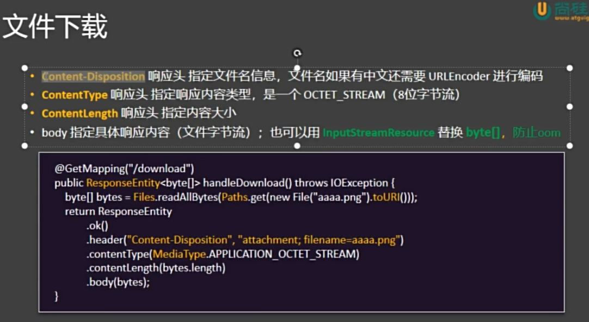
@RequestMapping("/test03")
public ResponseEntity<byte[]> download() throws Exception{
FileInputStream fileInputStream = new FileInputStream("E:\\school_work\\glories\\头像\\2.jpg");
byte[] alls = fileInputStream.readAllBytes();
return ResponseEntity.ok().contentType(MediaType.APPLICATION_OCTET_STREAM).contentLength(alls.length)
.header("Content-Disposition", "attachment;filename=2.jpg")
.body(alls);
}
问题1：文件名如果是中文会乱码
问题2：文件太大会出现oom
@RequestMapping("/test03")
public ResponseEntity<InputStreamResource> download() throws Exception{
FileInputStream fileInputStream = new FileInputStream("E:\\school_work\\glories\\头像\\2.jpg");
// 一口气读会异常
// byte[] alls = fileInputStream.readAllBytes();
InputStreamResource resource = new InputStreamResource(fileInputStream)
// 解决中文乱码：把中文转码成utf-8
String name = URLEncoder.encode("哈哈.jpg", "utf-8");
return ResponseEntity.ok().contentType(MediaType.APPLICATION_OCTET_STREAM).contentLength(fileInputStream.available())
.header("Content-Disposition", "attachment;filename="+ name)
.body(resource);
}
五、Spring Mvc 的最佳实践！！！⭐⭐⭐
1. RESTful风格⭐⭐⭐
REST 就是把任何web请求看作是对资源的操作，对同一资源的不同操作，他们的请求路径是一样的，具体是通过不同的动作来区分不同处理方法的。
2. 拦截器⭐⭐
1. 概念
拦截器（Interceptor） 是 Spring MVC 提供的一种机制，用于在 请求处理的前后 对请求进行预处理或后处理，而无需修改每个控制器的代码。它类似于 Servlet 中的 Filter（过滤器），但更贴近 Spring MVC 的执行流程，主要用于：
- 权限校验（如登录检查）
- 日志记录
- 性能监控（统计请求耗时）
- 请求参数预处理
- 防止重复提交
- 编码设置等
2. 执行时机（与请求生命周期的关系）
请求 → preHandle() → (目标方法 execute) → postHandle() → (视图渲染) → afterCompletion()
3. 三个核心方法
| 方法 | 触发时机 | 返回值含义 |
|---|---|---|
boolean preHandle(HttpServletRequest, HttpServletResponse, Object handler) |
控制器方法执行前 | true：放行，继续执行；false：中断，不再执行后续操作 |
void postHandle(HttpServletRequest, HttpServletResponse, Object handler, ModelAndView modelAndView) |
控制器方法执行后，视图渲染前 | 通常用于修改 Model 或 View |
void afterCompletion(HttpServletRequest, HttpServletResponse, Object handler, Exception ex) |
整个请求完成之后（视图渲染完毕） | 用于资源清理、异常处理等 |
⚠️ 注意： -
postHandle和afterCompletion只有在preHandle返回true时才会执行。 - 如果preHandle返回false，则后续都不会执行。
4. 实现方式
Spring MVC 中实现拦截器有两种主要方式：第二种过时了，就不记录了。
✅ 方式一：实现 HandlerInterceptor 接口（推荐），
import org.springframework.web.servlet.HandlerInterceptor;
import javax.servlet.http.HttpServletRequest;
import javax.servlet.http.HttpServletResponse;
public class LoginInterceptor implements HandlerInterceptor {
@Override
public boolean preHandle(HttpServletRequest request, HttpServletResponse response, Object handler) throws Exception {
// 模拟登录检查
Object user = request.getSession().getAttribute("user");
if (user == null) {
response.sendRedirect("/login"); // 未登录，跳转到登录页
return false; // 中断请求
}
return true; // 放行
}
@Override
public void postHandle(HttpServletRequest request, HttpServletResponse response, Object handler, ModelAndView modelAndView) throws Exception {
// 可以修改 modelAndView，比如添加公共数据
System.out.println("postHandle: 控制器执行完毕");
}
@Override
public void afterCompletion(HttpServletRequest request, HttpServletResponse response, Object handler, Exception ex) throws Exception {
// 请求结束，可用于清理资源
System.out.println("afterCompletion: 请求已完成");
}
}
当写完自定义的拦截器后，要把它注册到 Spring MVC 的拦截器链中。（通过 WebMvcConfigurer）
@Configuration
public class WebConfig implements WebMvcConfigurer {
@Override
public void addInterceptors(InterceptorRegistry registry) {
registry.addInterceptor(new LoginInterceptor())
.addPathPatterns("/admin/**") // 拦截哪些路径
.excludePathPatterns("/login", "/css/**", "/js/**"); // 放行哪些路径
}
}
5. Interceptor 的执行顺序
preHandle顺序执行，postHandle, afterCompletation 倒序执行，有一个拦截器不放行，所有 postHandle 都不能执行， 那些放行的拦截器的 afterCompletation 可以执行。
6. Interceptor 与 Fliter 的区别
Interceptor（拦截器）和 Filter（过滤器）都用于对请求进行预处理，但 Filter 是 Servlet 规范的一部分，作用于整个 Web 请求生命周期，能拦截所有请求（包括静态资源），且不依赖 Spring 容器；而 Interceptor 是 Spring MVC 提供的机制，只拦截控制器（Controller）相关的请求，可以方便地注入 Spring Bean，执行时机更精细（如 preHandle、postHandle），更适合在业务逻辑层进行权限校验、日志记录等操作
3. 异常处理⭐⭐⭐
异常处理分为两类：编程式（如 try-catch）和 声明式。在 Spring 中，推荐使用 声明式异常处理，因为它更简洁、可维护性强，能实现全局统一处理。
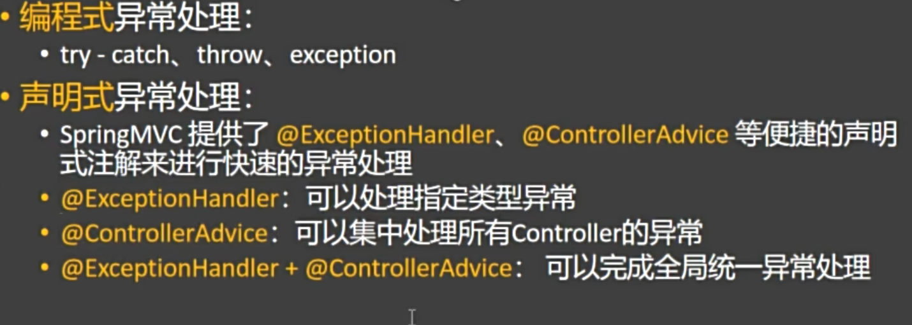
1. 实现方式
Spring MVC 提供了两个核心注解来实现声明式异常处理：
方式一：@ExceptionHandler —— 处理单个 Controller 的异常
适用于某个控制器内部的异常处理。
@RestController
public class UserController {
@GetMapping("/user/{id}")
public User getUser(@PathVariable Long id) {
if (id == -1) {
throw new UserNotFoundException("用户不存在");
}
return userService.findById(id);
}
// 使用 @ExceptionHandler 处理该 Controller 内部抛出的异常
@ExceptionHandler(UserNotFoundException.class)
public ResponseEntity<String> handleUserNotFound(UserNotFoundException ex) {
return ResponseEntity.status(HttpStatus.NOT_FOUND).body("用户未找到：" + ex.getMessage());
}
}
- 只作用于当前 Controller
- 可以处理特定类型的异常
- 不影响其他 Controller
方式二：@ControllerAdvice —— 全局异常处理
用于集中处理 所有 Controller 的异常，是实现“全局统一异常处理”的最佳方式。
@ControllerAdvice
@ResponseBody
public class GlobalExceptionHandler {
@ExceptionHandler(UserNotFoundException.class)
public ResponseEntity<String> handleUserNotFound(UserNotFoundException ex) {
return ResponseEntity.status(HttpStatus.NOT_FOUND).body("用户未找到：" + ex.getMessage());
}
@ExceptionHandler(Exception.class)
public ResponseEntity<String> handleGenericException(Exception ex) {
return ResponseEntity.status(HttpStatus.INTERNAL_SERVER_ERROR).body("服务器内部错误：" + ex.getMessage());
}
}
- 使用
@ControllerAdvice注解标记类 - 所有 Controller 都会自动应用该异常处理器
- 可以处理任意类型异常（如
Exception.class） - 支持返回 JSON、视图页面等
2. 项目中最佳实践
在实际项目开发中，异常种类繁多，无法穷尽所有情况。因此，后端应聚焦于核心业务逻辑的正确实现，当遇到非法状态、数据校验失败、资源不存在等异常情况时，无需手动处理每一个异常，而是通过主动抛出有意义的异常，提前终止当前业务流程。
这些异常由全局异常处理器（如 @ControllerAdvice + @ExceptionHandler）统一捕获，转换为标准的错误响应格式（如 JSON 错误码、消息提示），返回给前端。这样既保证了代码的简洁性和可维护性，又能让前端清晰感知到异常类型和原因，进而做出相应的用户提示或重试操作。
实现方式:
1）先自定义一个业务异常类，属性有code，mes
2）再去用枚举类列出系统中所有可能的业务错误
3）当出现业务错误时，直接抛出业务异常即可
4）之后就可以交给全局异常处理器或者是本类下的异常处理器处理了
4. 数据校验⭐⭐⭐
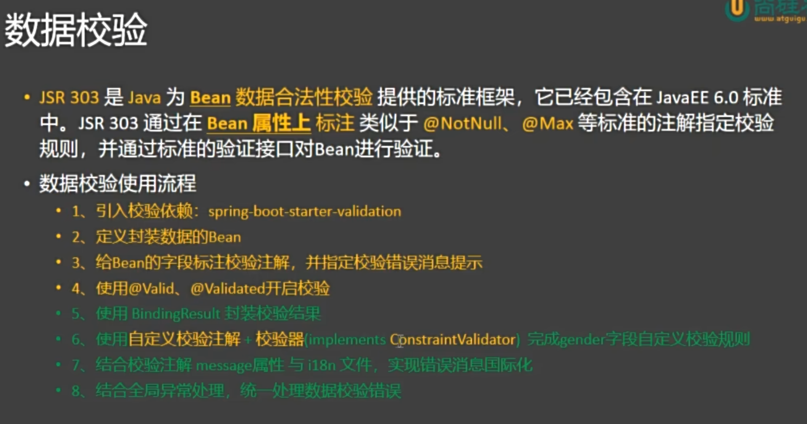
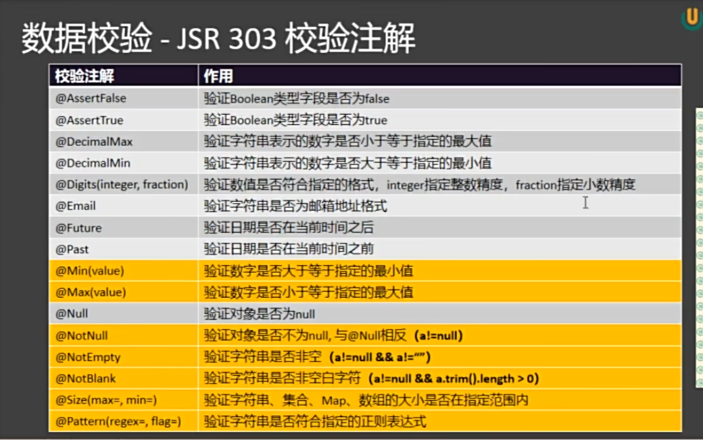
1) 导入场景启动器
<dependency>
<groupId>org.springframework.boot</groupId>
<artifactId>spring-boot-starter-validation</artifactId>
</dependency>
2）编写校验注解 @NotNull, @Max, @Min, @Email ...
3）告诉 spring MVC 开启校验 @valid
4）获得校验结果：BindResult
public R add(@RequestBody @Valid Employee employee, BindingResult bindingResult){
if (!bindingResult.hasErrors()){
return R.success();
}
HashMap<String, String> errorMap = new HashMap<>();
bindingResult.getFieldErrors().forEach(fieldError -> {
errorMap.put(fieldError.getField(), fieldError.getDefaultMessage());
});
return R.error(500, "校验失败", errorMap);
}
1. BindResult
它是用来去获得校验结果的。可以获得校验的字段以及校验的结果。
2. 全局异常处理校验失败
// 处理校验异常
@ExceptionHandler(MethodArgumentNotValidException.class)
public R handleMethodArgumentNotValidException(MethodArgumentNotValidException e) {
// 获得校验结果
BindingResult bindingResult = e.getBindingResult();
List<FieldError> fieldErrors = bindingResult.getFieldErrors();
HashMap<String, String>data = new HashMap<>();
fieldErrors.forEach(fieldError -> {
data.put(fieldError.getField(), fieldError.getDefaultMessage());
});
return R.error(500, "校验失败", data);
}
3. 自定义校验器
1）正则表达式
2）自定义注解（写一个自定义注解，然后绑定一个自定义校验器）
==========================================================================================
1：自定义校验注解（抄源码即可）
@Documented
@Constraint(
validatedBy = {GenderValidator.class}
)
@Target({ElementType.FIELD})
@Retention(RetentionPolicy.RUNTIME)
public @interface Gender {
String message() default "{jakarta.validation.constraints.Email.message}";
Class<?>[] groups() default {};
Class<? extends Payload>[] payload() default {};
}
===================================================================================
2：自定义校验器（实现ConstraintValidator接口）
public class GenderValidator implements ConstraintValidator<Gender, String> {
/**
*
* @param s 前端传来的属性
* @param constraintValidatorContext 校验上下文
* @return
*/
@Override
public boolean isValid(String s, ConstraintValidatorContext constraintValidatorContext) {
return s.equals("男") || s.equals("女");
}
}
===================================================================================
3：应用自己的校验器
@Constraint(
validatedBy = {GenderValidator.class}
)
4 错误信息提示（国际化，其实没啥用）
国际化是通过配置文件来完成的
1）配置提示信息的编码方式以及位置（默认是messages）
2）直接在不同国家的配置文件下写就完事了
# messages_en_US.properties下
gender.message=gender is allowed only for male or female
# messages_zh_CH.properties下
gender.message=性别只能为男或女
# messages
默认环境
5. 各种o的分层模型
在传统的 Java Web 开发中，很多开发者习惯于使用同一个 POJO 类（如 User）既作为数据库实体，又作为接口返回给前端的数据对象。这种做法虽然简单，但存在严重的安全隐患和设计缺陷。例如，数据库实体中通常包含敏感字段，如用户密码、手机号、身份证号等，如果直接将这个对象序列化为 JSON 返回给前端，就可能导致敏感信息泄露。即使你在字段上加了 @JsonIgnore，这种方式也属于“打补丁式”编程，难以维护，且容易遗漏。
更合理的设计是采用分层模型，将不同的职责分离。具体来说，应该为不同场景定义不同的 Java Bean：使用 Entity 类与数据库表映射，用于持久层操作；使用 DTO（Data Transfer Object）类专门用于向前端返回数据；使用 VO 或 Form 类接收前端传来的请求参数。这样，每个类只承担单一职责，系统更加清晰、安全、可维护。
特别是在数据脱敏场景下，这种分层设计的优势尤为明显。比如，用户手机号 13812345678 在返回前端时应显示为 138****5678，身份证号也应部分隐藏。如果使用统一的 POJO，你需要在每个 Controller 中手动处理脱敏逻辑，代码重复且容易出错。而通过 DTO 类，你可以在其静态方法或构造函数中统一完成脱敏转换，例如提供一个 fromEntity() 方法，将 UserEntity 转换为已脱敏的 UserDTO，从而确保所有接口返回的数据都经过统一处理。
此外，使用 DTO 还能有效解耦数据库结构与接口协议。当数据库表结构发生变化时（如字段重命名、拆分），只需调整 Entity 到 DTO 的映射逻辑，而无需修改对外接口，避免影响前端代码。同样，前端需求变化时，也可以灵活调整 DTO 字段，而不必改动数据库设计。这种松耦合结构大大提升了系统的可扩展性和团队协作效率。
为了进一步简化 DTO 与 Entity 之间的转换，可以引入 MapStruct 等映射框架。它通过注解在编译期生成高效的映射代码，避免了手动编写大量 setter 和 getter 的繁琐工作，同时保持高性能。相比反射工具（如 BeanUtils），MapStruct 更安全、更快速。
总之，避免将数据库实体类直接暴露给前端，是构建安全、健壮 Web 应用的基本原则。通过引入 DTO 模式，不仅能实现敏感数据的自动脱敏，还能提升代码的可读性、可维护性和可扩展性。这是一种从“能用”到“好用”的工程思维升级，也是企业级开发中的最佳实践。
6. 日期处理⭐
1. @JsonFormat 的作用
当我们把 Java 对象转换成 JSON 字符串（比如接口返回给前端）时，日期字段默认可能以时间戳（如 1672531200000）的形式输出，或者格式不统一（如 "2023-01-01T00:00:00"），前端难以直接展示。同样，前端传来的日期字符串也可能因为格式不匹配导致解析失败。
@JsonFormat 就是用来指定某个字段在转成 JSON 或从 JSON 解析时所使用的日期格式，确保前后端对日期的理解一致。
2. 基本用法
import com.fasterxml.jackson.annotation.JsonFormat;
import java.util.Date;
public class User {
private String name;
@JsonFormat(pattern = "yyyy-MM-dd HH:mm:ss", timezone = "GMT+8")
private Date createTime;
// getter 和 setter
}
3. 全局配置
如果不使用全局配置，那么每一个日期字段都需要去写 @JsonFormat，太麻烦了，尤其是采用 JavaBean 分层架构。此时，就可以用配置文件来实现全局配置。
7. 接口文档
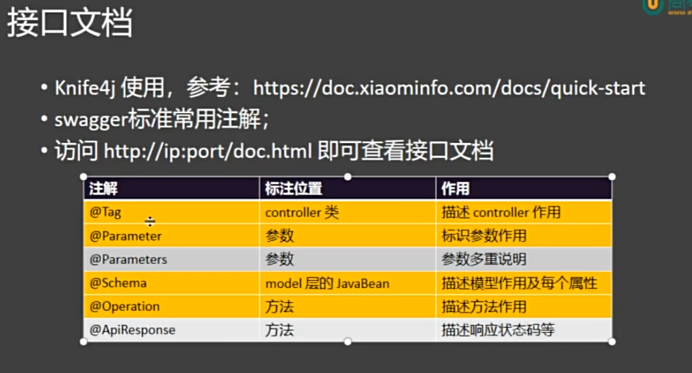
8. DispathcerServlet
DispatcherServlet 是 Spring MVC 框架的核心组件，可以把它理解为整个 Web 请求处理流程的“总指挥”或“前端控制器”。当你的浏览器发起一个 HTTP 请求（比如访问 /user/list），这个请求首先到达的就是 DispatcherServlet。
1. 九大组件
@Nullable
private MultipartResolver multipartResolver;
@Nullable
private LocaleResolver localeResolver;
/** @deprecated */
@Deprecated
@Nullable
private ThemeResolver themeResolver;
@Nullable
private List<HandlerMapping> handlerMappings; // 存放请求路径和处理器的映射关系
@Nullable
private List<HandlerAdapter> handlerAdapters; // 处理器的一些反射增强
@Nullable
private List<HandlerExceptionResolver> handlerExceptionResolvers; // 异常处理解析器
@Nullable
private RequestToViewNameTranslator viewNameTranslator;
@Nullable
private FlashMapManager flashMapManager;
@Nullable
private List<ViewResolver> viewResolvers;
2. 运行流程
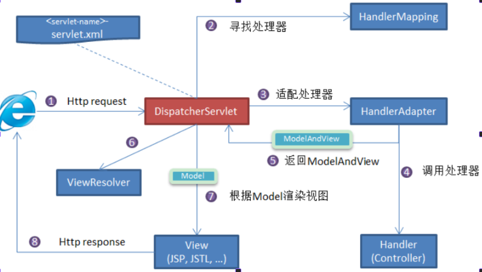
-
客户端（浏览器）发送请求
DispatcherServlet拦截请求. -
DispatcherServlet根据请求消息调用HandlerMapping会根据本次请求的url找到对应的handler，并会将请求涉及到的拦截器和Handler一起封装返回。 -
DispatcherServlet调用HandlerAdapter适配器执行Handler。 -
Handler完成对用户请求的处理后，会返回一个ModelAndView对象给DispatcherServlet，ModelAndView顾名思义，包含了数据模型以及相应的视图的信息。Model是返回的数据对象，View是个逻辑上的View -
DispatcherServlet将ModelAndView传给ViewReslover视图解析器 -
ViewReslover解析后返回具体View -
DispaterServlet把返回的Model传给View（视图渲染） -
DispaterServlet会将视图响应给客户端
六、Mybatis⭐
持久层框架 是用于简化数据库操作、管理数据持久化的软件框架。它的核心作用是 让 Java 对象与数据库中的记录之间进行方便、高效、安全的转换和操作，而不需要开发者手动编写大量重复的 JDBC 代码。
1. mybatis的使用方法
1）导入mybatis依赖
2）配置数据源信息
3）写一个 javaBean，也就是 PO（ Persist Object）
4）写持久层接口，也就是Mapper层（注意标 @Mapper）
5）去写 Mapper 层方法对应的 xml 配置文件，去映射这些接口怎么执行，执行那些sql。
6）注意数据库字段名下划线一般在 Po 种要写成驼峰式。
7）最后，在配置文件中告诉 Mybatis xml 文件的位置。
2. 参数处理
1. #{} 与 ${} 的区别
在 MyBatis 中，#{} 和 ${} 都可以用于传递参数，但它们的底层机制和使用场景有着本质区别。
1）首先，#{} 是 MyBatis 中的预编译占位符，相当于 JDBC 中的 ?。在执行 SQL 语句时，MyBatis 会先将 #{} 替换为一个问号占位符，然后通过 PreparedStatement 逐个设置参数值。这种方式能够有效防止 SQL 注入，因为参数值不会直接拼接到 SQL 字符串中，而是由数据库在执行阶段安全地绑定。此外，#{} 还能自动根据参数类型添加合适的引号，例如当传入字符串时会自动加上单引号，非常适合用于插入、更新或查询时的条件参数赋值。
2）与之相对，${} 则是 MyBatis 的字符串拼接方式，它在 SQL 语句解析阶段就会被直接替换为实际的参数内容，相当于直接将变量值插入到 SQL 字符串中。这意味着如果参数值来自用户输入，可能会造成 SQL 注入风险。因此，${} 一般不用于值的传递，而是用于那些不能使用 #{} 的场景，比如动态指定表名、列名、排序字段或关键字等位置。需要注意的是，${} 不会自动加引号，若拼接的是字符串类型参数，必须手动添加单引号，否则会导致 SQL 语法错误。
2. 参数取值方法
最佳实践：即使只有一个参数，也用 Param 直接参数名
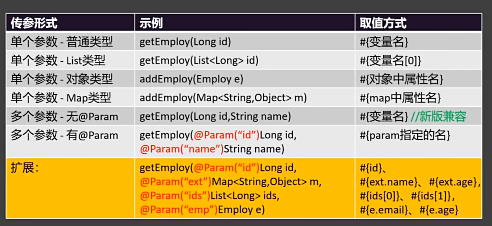
3. 返回值
在 MyBatis 中，每一个 Mapper 接口的方法都需要在对应的 XML 映射文件中明确指定查询结果的封装类型，即通过 resultType 或 resultMap 属性来定义返回值类型。虽然 MyBatis 内置了一些常用类型的别名（如 int、string、map、list 等），但在实际开发中仍建议使用完整限定类名（即全类名），这样能避免命名冲突，也让 XML 文件更直观、可维护。
1）指定返回类型
每一个 Mapper 层接口对应的 XML 语句块中，都必须指明查询结果要封装成的 Java 类型。通常使用 resultType 属性指定类型名称，例如：
<select id="findUserById" resultType="com.example.pojo.User">
SELECT * FROM user WHERE id = #{id}
</select>
2）集合类型的返回值
当方法的返回值是集合类型（例如 List 或 Set或Map），在 MyBatis 的配置中只需指定集合中元素的类型即可。MyBatis 会自动将查询结果的多行记录封装为集合。例如：
// 将结果封装为 Map (集合，set,list同理)
@MapKey("id")
Map<Integer, Emp> getMap();
<select id="getMap" resultType="person.liutianba.mybatis.bean.Emp">
select * from t_emp
</select>
3）复杂返回结果的映射
如果查询结果中字段名与实体类属性名不完全对应，或需要多表联合查询时，则可使用 resultMap 进行更灵活的映射配置，通过 <result> 和 <association> 等标签自定义字段与属性之间的对应关系。
<resultMap id="rme" type="person.liutianba.mybatis.bean.Emp">
<!--主键映射用id-->
<id column="id" property="id"></id>
<!--普通属性映射用 result-->
<result column="age" property="age"></result>
<result column="emp_name" property="empName"></result>
<result column="emp_salary" property="empSalary"></result>
</resultMap>
<select id="getEmpById" resultMap="rme">
select * from t_emp where id = #{id}
</select>
下面是多表查询的一些语法
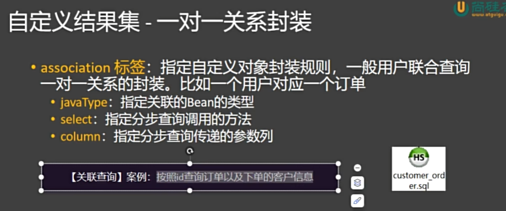
一对一关系封装：
<resultMap id="orderWithCustomer" type="person.liutianba.mybatis.bean.Order">
<id property="id" column="id"/>
<result property="address" column="address"/>
<result property="amount" column="amount"/>
<result property="customerId" column="customer_id"/>
<association property="customer" javaType="person.liutianba.mybatis.bean.Customer">
<id property="id" column="c_id"/>
<result property="customerName" column="customer_name"/>
<result property="phone" column="phone"/>
</association>
</resultMap>
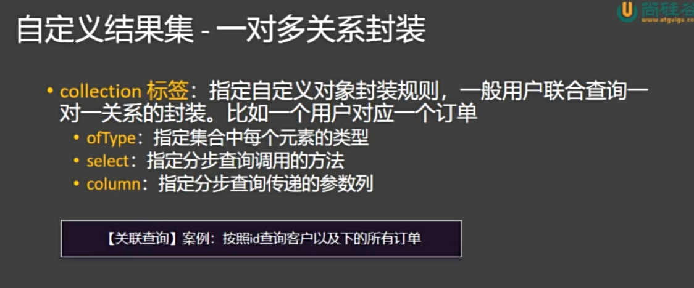
一对多关系封装：（collection）
<!--演示collection-->
<resultMap id="CustomerWithOrdersRM" type="person.liutianba.mybatis.bean.Customer">
<id column="c_id" property="id"></id>
<result column="customer_name" property="customerName"></result>
<result column="phone" property="phone"></result>
<collection property="orders" ofType="person.liutianba.mybatis.bean.Order">
<id column="id" property="id"></id>
<result column="address" property="address"></result>
<result column="amount" property="amount"></result>
<result column="c_id" property="customerId"></result>
</collection>
</resultMap>
3. 分步查询
在需要链表查询的场景下，不仅可以按常规写法，也可以写分布查询，如下面的场景：查询具体订单以及它对应的客户的信息：
1）查询订单
2）根据客户id查询id
<resultMap id="CustomerWithOrdersStepRM" type="person.liutianba.mybatis.bean.Customer">
<id column="id" property="id"></id>
<result column="customer_name" property="customerName"></result>
<result column="phone" property="phone"></result>
<collection property="orders" select="getOrdersByCustomerId" column="id"></collection>
</resultMap>
<select id="getOrdersByCustomerId" resultType="person.liutianba.mybatis.bean.Order">
select * from t_orders
where customer_id=#{id}
</select>
<select id="getCustomerByIdWithOrders" resultMap="CustomerWithOrdersStepRM">
SELECT *
FROM t_customer
WHERE id=#{id}
</select>
在分页查询的情况下，我们可以开启延期加载，也就是如果没用到需要调用其他查询方法才能查到的数据，就不发这个查询。
4. 动态sql
4.1 if 标签
用于判断某个条件是否成立，决定是否拼接某段 SQL。
4.2 <where> 标签
自动处理 WHERE 关键字，并智能去除多余的 AND 或 OR。
<select id="findEmp" parameterType="EmpPO" resultType="EmpPO">
SELECT * FROM t_emp
<where>
<if test="id != null">
AND id = #{id}
</if>
<if test="empName != null and empName != ''">
AND emp_name = #{empName}
</if>
<if test="age != null">
AND age >= #{age}
</if>
</where>
</select>
4.3 <set>标签
用于 UPDATE 语句中，自动处理 SET 关键字，并去除最后一个多余的逗号。
<update id="updateEmp" parameterType="EmpPO">
UPDATE t_emp
<set>
<if test="empName != null and empName != ''">
emp_name = #{empName},
</if>
<if test="age != null">
age = #{age},
</if>
<if test="empSalary != null">
emp_salary = #{empSalary}
</if>
</set>
WHERE id = #{id}
</update>
4.4 <trim> 实现 <where> 的功能
<trim> 是更灵活的标签，可以自定义前后缀处理。当
<trim prefix="前缀" prefixOverrides="要去除的前缀字符串"
suffix="后缀" suffixOverrides="要去除的后缀字符串">
SQL 片段
</trim>
<select id="findEmp" parameterType="EmpPO" resultType="EmpPO">
SELECT * FROM t_emp
<trim prefix="WHERE" prefixOverrides="AND |OR ">
<if test="id != null">
AND id = #{id}
</if>
<if test="empName != null and empName != ''">
AND emp_name = #{empName}
</if>
<if test="age != null">
AND age >= #{age}
</if>
</trim>
</select>
prefix="WHERE"：如果有内容，加WHERE前缀prefixOverrides="AND |OR "：去除第一个多余的AND或OR- 效果和
<where>完全一样，但更灵活
4.5 <trim> 实现 <set> 的功能
<update id="updateEmp" parameterType="EmpPO">
UPDATE t_emp
<trim prefix="SET" suffixOverrides=",">
<if test="empName != null and empName != ''">
emp_name = #{empName},
</if>
<if test="age != null">
age = #{age},
</if>
<if test="empSalary != null">
emp_salary = #{empSalary},
</if>
</trim>
WHERE id = #{id}
</update>
4.6 <choose> <when> <otherwise>
当需要从多个条件中选择一个来拼接 SQL 时使用。它保证只执行第一个匹配的条件，其余忽略，常用于“搜索优先级”或“单选条件”。
<choose>
<when test="条件1">
SQL 片段1
</when>
<when test="条件2">
SQL 片段2
</when>
<otherwise>
默认 SQL 片段（可选）
</otherwise>
</choose>
5. foreach 标签
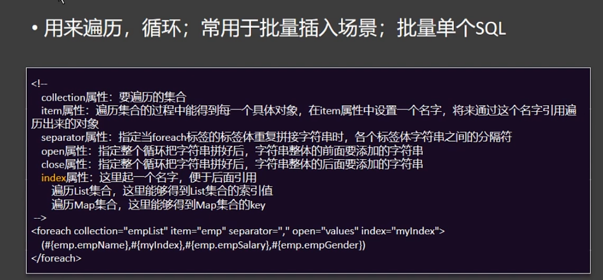
1. foreach实现批量查询
原生语法：where xxx in()
<select id="getEmpByIds" resultType="person.liutianba.mybatis.bean.Emp">
select * from t_emp where id in
<if test="ids != null">
<foreach collection="ids" item="id" open="(" close=")" separator=",">
#{id}
</foreach>
</if>
</select>
2.）foreach实现批量插入
原生语法：values (), (),
<insert id="addEmps">
insert into t_emp (emp_name, age, emp_salary)
values
<foreach collection="list" item="emp" separator=",">
(#{emp.empName}, #{emp.age}, #{emp.empSalary})
</foreach>
</insert>
3. foreach实现批量修改
没有原生语法，所以需要在一个sql请求发送多个sql，注：需要在数据库连接时开始批处理。
6. sql 标签
负责把常用的sql片段切出来，然后做一个复用。需要配合 include 标签来使用。
5. 特殊字符的转义
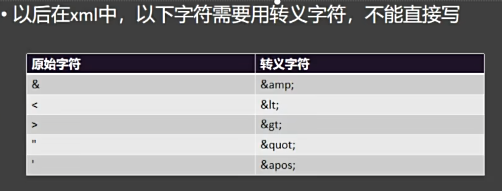
6. Mybatis 的缓存机制
MyBatis 提供了两级缓存机制：一级缓存 和 二级缓存，用于提升数据库查询性能，避免重复执行相同的 SQL。
1. 一级缓存机制 （同一事务共享）
1）第一次执行 select 时，查询数据库，结果放入一级缓存
2）后续执行相同 SQL 和参数时，直接从缓存中取数据，不再查询数据库
3）如果执行了 insert、update、delete 或 sqlSession.clearCache()，缓存会被清空
2. 二级缓存机制 （所有事务共享）
1）作用范围：Mapper 级别（命名空间级别）
2）生命周期：跨 SqlSession，甚至跨事务共享
3）默认关闭：必须手动配置才能启用
- 第一个
SqlSession查询数据后，结果不仅存入一级缓存，还写入二级缓存 - 第二个
SqlSession执行相同查询时，先查二级缓存，命中则直接返回 - 当任意
SqlSession执行commit()时，二级缓存才会更新（未提交不更新）
// 第一个会话
SqlSession session1 = sqlSessionFactory.openSession();
UserMapper mapper1 = session1.getMapper(UserMapper.class);
User user1 = mapper1.findById(1); // 查数据库 → 存入一级 + 二级缓存
session1.close(); // 二级缓存此时已更新（因为 commit）
// 第二个会话
SqlSession session2 = sqlSessionFactory.openSession();
UserMapper mapper2 = session2.getMapper(UserMapper.class);
User user2 = mapper2.findById(1); // 直接从二级缓存读取！不查数据库
session2.close();
7. Mybatis的四大对象以及拦截器（先了解）
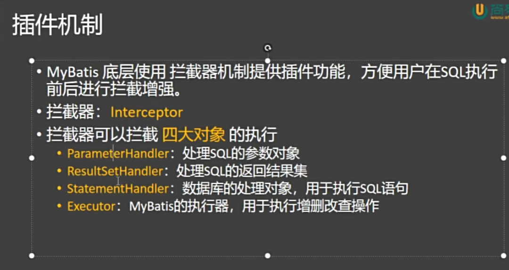
8. 分页插件
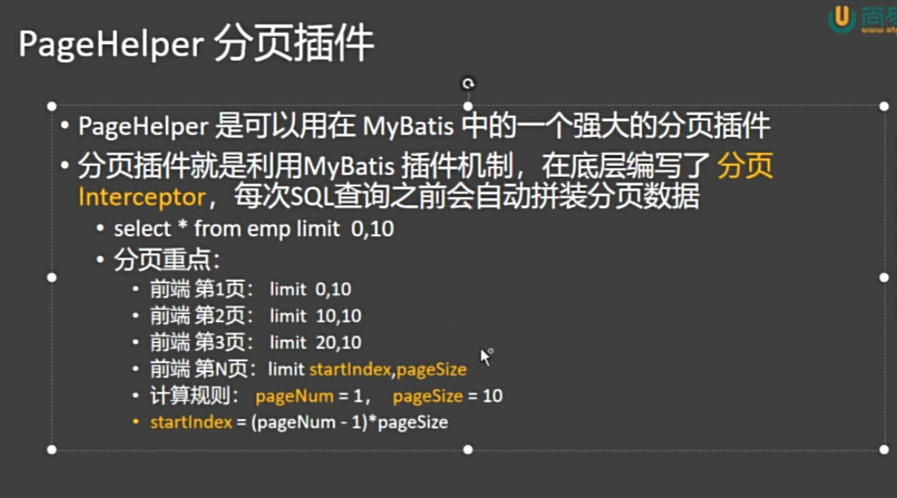
使用步骤：
1）引入依赖：PageHelper
<dependency>
<groupId>com.github.pagehelper</groupId>
<artifactId>pagehelper-spring-boot-starter</artifactId>
<version>最新版本</version>
</dependency>
2）注册 PageHelper 插件，可以在注册过程中配置一些属性
@Configuration
public class PageHelperConfig {
/*
* 配置分页插件
*/
@Bean
public PageInterceptor pageHelper() {
// 1. 创建插件对象
PageInterceptor pageHelper = new PageInterceptor();
// 2. 配置插件对象
return pageHelper;
}
}
3）在需要分页的方法之前开始分页
4）用 PageInfo 去包装分页查询结果，里面有前端要用到的很多数据，比如页面大小，是否是最后一页等等。
七、Mybatis plus⭐⭐
MyBatis-Plus 是一个 MyBatis 的增强工具，在 MyBatis 的基础上只做增强不做改变，为简化开发、提高效率而生。
7.1 框架概述
MyBatis-Plus（简称 MP）是一个MyBatis 的增强工具，在 MyBatis 的基础上只做增强不做改变，为简化开发、提高效率而生。其突出的特性如下：
- 无侵入：只做增强不做改变，引入它不会对现有工程产生影响，如丝般顺滑
- 强大的 CRUD 操作：内置通用 Mapper、通用 Service，提供了大量的通用的CRUD方法，因此可以省去大量手写sql的语句的工作。
- 条件构造器：提供了强大的条件构造器，可以构造各种复杂的查询条件，以应对各种复杂查询。
- 内置分页插件：配置好插件之后，写分页等同于普通 List 查询，无需关注分页逻辑。
下面通过一个简单案例快速熟悉MyBatis Plus的基本使用
7.2 数据库准备
首先在数据库中准备一张表，为后序的学习做准备。
- 创建数据库
在MySQL中创建一个数据库hello_mp
- 创建表
在hello-mp库中创建一个表user
DROP TABLE IF EXISTS user;
CREATE TABLE user
(
id BIGINT(20) NOT NULL AUTO_INCREMENT COMMENT '主键ID',
name VARCHAR(30) NULL DEFAULT NULL COMMENT '姓名',
age INT(11) NULL DEFAULT NULL COMMENT '年龄',
email VARCHAR(50) NULL DEFAULT NULL COMMENT '邮箱',
PRIMARY KEY (id)
);
- 插入数据
INSERT INTO user (id, name, age, email) VALUES
(1, 'Jone', 18, 'test1@baomidou.com'),
(2, 'Jack', 20, 'test2@baomidou.com'),
(3, 'Tom', 28, 'test3@baomidou.com'),
(4, 'Sandy', 21, 'test4@baomidou.com'),
(5, 'Billie', 24, 'test5@baomidou.com');
7.3 与SpringBoot集成
Mybatis Plus与SpringBoot的集成十分简单，具体操作如下
- 引入Maven 依赖
提前创建好一个SpringBoot项目，然后在项目中引入MyBatis Plus依赖
<dependency>
<groupId>com.baomidou</groupId>
<artifactId>mybatis-plus-spring-boot3-starter</artifactId>
<version>3.5.6</version>
</dependency>
本案例完整的pom.xml文件如下
<?xml version="1.0" encoding="UTF-8"?>
<project xmlns="http://maven.apache.org/POM/4.0.0"
xmlns:xsi="http://www.w3.org/2001/XMLSchema-instance"
xsi:schemaLocation="http://maven.apache.org/POM/4.0.0 http://maven.apache.org/xsd/maven-4.0.0.xsd">
<modelVersion>4.0.0</modelVersion>
<groupId>person.liutianba</groupId>
<artifactId>springboot_03_mybatis-plus</artifactId>
<version>1.0-SNAPSHOT</version>
<parent>
<groupId>org.springframework.boot</groupId>
<artifactId>spring-boot-starter-parent</artifactId>
<version>3.5.7</version>
</parent>
<dependencies>
<dependency>
<groupId>org.springframework.boot</groupId>
<artifactId>spring-boot-starter-web</artifactId>
</dependency>
<dependency>
<groupId>com.baomidou</groupId>
<artifactId>mybatis-plus-spring-boot3-starter</artifactId>
<version>3.5.6</version>
</dependency>
<dependency>
<groupId>org.springframework.boot</groupId>
<artifactId>spring-boot-starter-test</artifactId>
</dependency>
<dependency>
<groupId>com.mysql</groupId>
<artifactId>mysql-connector-j</artifactId>
</dependency>
<dependency>
<groupId>org.projectlombok</groupId>
<artifactId>lombok</artifactId>
</dependency>
</dependencies>
<properties>
<maven.compiler.source>17</maven.compiler.source>
<maven.compiler.target>17</maven.compiler.target>
<project.build.sourceEncoding>UTF-8</project.build.sourceEncoding>
</properties>
</project>
- 配置
application.yml文件
配置数据库相关内容如下
spring:
datasource:
driver-class-name: com.mysql.cj.jdbc.Driver
username: root
password: liuqiang
url: jdbc:mysql://192.168.10.101:3306/hello_mp?useUnicode=true&characterEncoding=utf-8&serverTimezone=GMT%2b8
7.4 创建实体类
创建与user表相对应的实体类，如下
@Data
@TableName("user")
public class User {
@TableId(value = "id", type = IdType.AUTO)
private Long id;
@TableField("name")
private String name;
@TableField("age")
private Integer age;
@TableField("email")
private String email;
}
知识点：
实体类中的三个注解的含义如下
@TableName：表名注解，用于标识实体类所对应的表-
value：用于声明表名 -
@TableId：主键注解，用于标识主键字段 value：用于声明主键的字段名-
type：用于声明主键的生成策略，常用的策略有AUTO、ASSIGN_UUID、INPUT等等 -
@TableField：普通字段注解，用于标识属性所对应的表字段 value：用于声明普通字段的字段名
7.5 通用Mapper
通用Mapper提供了通用的CRUD方法，使用它可以省去大量编写简单重复的SQL语句的工作，具体用法如下
- 创建Mapper接口
创建UserMapper接口，并继承由Mybatis Plus提供的BaseMapper<T>接口，如下
知识点：
若Mapper接口过多，可不用逐一配置@Mapper注解，而使用@MapperScan注解指定包扫描路径进行统一管理，例如
@SpringBootApplication
@MapperScan("com.atguigu.hellomp.mapper")
public class HelloMpApplication {
public static void main(String[] args) {
SpringApplication.run(HelloMpApplication.class, args);
}
}
- 测试通用Mapper
创建userMapperTest测试类型，内容如下
@SpringBootTest
class UserMapperTest {
@Autowired
private UserMapper userMapper;
@Test
public void testSelectList() {
List<User> users = userMapper.selectList(null);
users.forEach(System.out::println);
}
@Test
public void testSelectById() {
User user = userMapper.selectById(1);
System.out.println(user);
}
@Test
public void testInsert() {
User user = new User();
user.setName("zhangsan");
user.setAge(11);
user.setEmail("test@test.com");
userMapper.insert(user);
}
@Test
public void testUpdateById() {
User user = userMapper.selectById(1);
user.setName("xiaoming");
userMapper.updateById(user);
}
@Test
public void testDeleteById() {
userMapper.deleteById(1);
}
}
7.6 通用Service
通用Service进一步封装了通用Mapper的CRUD方法，并提供了例如saveOrUpdate、saveBatch等高级方法。
- 创建Service接口
创建UserService，内容如下
- 创建Service实现类
创建UserServiceImpl，内容如下
@Service
public class UserServiceImpl extends ServiceImpl<UserMapper, User> implements UserService {
}
- 测试通用Service
创建UserServiceImplTest测试类，内容如下
@SpringBootTest
class UserServiceImplTest {
@Autowired
private UserService userService;
@Test
public void testSaveOrUpdate() {
User user1 = userService.getById(2);
user1.setName("xiaohu");
User user2 = new User();
user2.setName("lisi");
user2.setAge(27);
user2.setEmail("lisi@email.com");
userService.saveOrUpdate(user1);
userService.saveOrUpdate(user2);
}
@Test
public void testSaveBatch() {
User user1 = new User();
user1.setName("dongdong");
user1.setAge(49);
user1.setEmail("dongdong@email.com");
User user2 = new User();
user2.setName("nannan");
user2.setAge(29);
user2.setEmail("nannan@email.com");
List<User> users = List.of(user1, user2);
userService.saveBatch(users);
}
}
7.7 条件构造器
MyBatis-Plus 提供了一套强大的条件构造器（Wrapper），用于构建复杂的数据库查询条件。Wrapper 类允许开发者以链式调用的方式构造查询条件，无需编写繁琐的 SQL 语句，从而提高开发效率并减少 SQL 注入的风险。
在 MyBatis-Plus 中，Wrapper 类是构建查询和更新条件的核心工具。以下是主要的 Wrapper 类及其功能：
- AbstractWrapper：这是一个抽象基类，提供了所有 Wrapper 类共有的方法和属性。它定义了条件构造的基本逻辑，包括字段（column）、值（value）、操作符（condition）等。所有的 QueryWrapper、UpdateWrapper、LambdaQueryWrapper 和 LambdaUpdateWrapper 都继承自 AbstractWrapper。
- QueryWrapper：专门用于构造查询条件，支持基本的等于、不等于、大于、小于等各种常见操作。它允许你以链式调用的方式添加多个查询条件，并且可以组合使用
and和or逻辑。 - UpdateWrapper：用于构造更新条件，可以在更新数据时指定条件。与 QueryWrapper 类似，它也支持链式调用和逻辑组合。使用 UpdateWrapper 可以在不创建实体对象的情况下，直接设置更新字段和条件。
- LambdaQueryWrapper：这是一个基于 Lambda 表达式的查询条件构造器，它通过 Lambda 表达式来引用实体类的属性，从而避免了硬编码字段名。这种方式提高了代码的可读性和可维护性，尤其是在字段名可能发生变化的情况下。
-
LambdaUpdateWrapper：类似于 LambdaQueryWrapper，LambdaUpdateWrapper 是基于 Lambda 表达式的更新条件构造器。它允许你使用 Lambda 表达式来指定更新字段和条件，同样避免了硬编码字段名的问题。
-
创建
WrapperTest测试类，内容如下
@SpringBootTest
public class WrapperTest {
@Autowired
private UserService userService;
@Test
public void testQueryWrapper() {
//查询name=Tom的所有用户
QueryWrapper<User> queryWrapper1 = new QueryWrapper<>();
queryWrapper1.eq("name", "Tom");
//查询邮箱域名为baomidou.com的所有用户
QueryWrapper<User> queryWrapper2 = new QueryWrapper<>();
queryWrapper2.like("email", "baomidou.com");
//查询所有用户信息并按照age字段降序排序
QueryWrapper<User> queryWrapper3 = new QueryWrapper<>();
queryWrapper3.orderByDesc("age");
//查询age介于[20,30]的所有用户
QueryWrapper<User> queryWrapper4 = new QueryWrapper<>();
queryWrapper4.between("age", 20, 30);
//查询age小于20或大于30的用户
QueryWrapper<User> queryWrapper5 = new QueryWrapper<>();
queryWrapper5.lt("age", 20).or().gt("age", 30);
//邮箱域名为baomidou.com且年龄小于30或大于40且的用户
QueryWrapper<User> queryWrapper6 = new QueryWrapper<>();
queryWrapper6.like("email", "baomidou.com").and(wrapper -> wrapper.lt("age", 30).or().gt("age", 40));
List<User> list = userService.list(queryWrapper6);
list.forEach(System.out::println);
}
@Test
public void testUpdateWrapper() {
//将name=Tom的用户的email改为Tom@baobidou.com
UpdateWrapper<User> updateWrapper = new UpdateWrapper<>();
updateWrapper.eq("name", "Tom");
updateWrapper.set("email", "Tom@baobidou.com");
userService.update(updateWrapper);
}
}
- 创建
LambdaWrapperTest测试类，内容如下
上述的QueryWrapper和UpdateWrapper均有一个Lambda版本，也就是LambdaQueryWrapper和LambdaUpdateWrapper，Lambda版本的优势在于，可以省去字段名的硬编码，具体案例如下：
@SpringBootTest
public class LambdaWrapperTest {
@Autowired
private UserService userService;
@Test
public void testLambdaQueryWrapper() {
//查询name=Tom的所有用户
LambdaQueryWrapper<User> lambdaQueryWrapper = new LambdaQueryWrapper<>();
lambdaQueryWrapper.eq(User::getName, "Tom");
List<User> list = userService.list(lambdaQueryWrapper);
list.forEach(System.out::println);
}
@Test
public void testLambdaUpdateWrapper() {
//将name=Tom的用户的邮箱改为Tom@tom.com
LambdaUpdateWrapper<User> lambdaUpdateWrapper = new LambdaUpdateWrapper<>();
lambdaUpdateWrapper.eq(User::getName, "Tom");
lambdaUpdateWrapper.set(User::getEmail, "Tom@Tom.com");
userService.update(lambdaUpdateWrapper);
}
}
7.8 逻辑删除
逻辑删除，可以方便地实现对数据库记录的逻辑删除而不是物理删除。逻辑删除是指通过更改记录的状态或添加标记字段来模拟删除操作，从而保留了删除前的数据，便于后续的数据分析和恢复。
- 物理删除：真实删除，将对应数据从数据库中删除，之后查询不到此条被删除的数据
-
逻辑删除：假删除，将对应数据中代表是否被删除字段的状态修改为“被删除状态”，之后在数据库中仍旧能看到此条数据记录
-
数据库和实体类添加逻辑删除字段
-
表添加逻辑删除字段
可以是一个布尔类型、整数类型或枚举类型。
-
实体类添加属性
2.指定逻辑删除字段和属性值
- 单一指定
@Data
public class User {
// @TableId
private Integer id;
private String name;
private Integer age;
private String email;
@TableLogic
//逻辑删除字段 int mybatis-plus下,默认 逻辑删除值为1 未逻辑删除 0
private Integer deleted;
}
- 全局配置
mybatis-plus:
global-config:
db-config:
logic-delete-field: deleted #列名
logic-delete-value: 1 # 逻辑已删除值(默认为 1)
logic-not-delete-value: 0 # 逻辑未删除值(默认为 0)
3.演示逻辑删除操作
删除代码:
执行效果:
JDBC Connection [com.alibaba.druid.proxy.jdbc.ConnectionProxyImpl@5871a482] will not be managed by Spring
==> Preparing: UPDATE user SET deleted=1 WHERE id=? AND deleted=0 ==> Parameters: 5(Integer) <== Updates: 1 4. 测试查询数据
@Test
public void testQuick6(){
//正常查询.默认查询非逻辑删除数据
userMapper.selectList(null);
}
//SELECT id,name,age,email,deleted FROM user WHERE deleted=0
7.9 分页插件
分页查询是一个很常见的需求，故Mybatis-Plus提供了一个分页插件，使用它可以十分方便的完成分页查询。下面介绍Mybatis-Plus分页插件的用法，详细信息可参考官方文档。
- 配置分页插件
创建com.atguigu.hellomp.config.MPConfiguration配置类，增加如下内容
@Configuration
public class MPConfiguration {
@Bean
public MybatisPlusInterceptor mybatisPlusInterceptor() {
MybatisPlusInterceptor interceptor = new MybatisPlusInterceptor();
interceptor.addInnerInterceptor(new PaginationInnerInterceptor(DbType.MYSQL));
return interceptor;
}
}
- 分页插件使用说明
构造分页对象, 分页对象包含了分页的各项信息，其核心属性如下：
| 属性名 | 类型 | 默认值 | 描述 |
| ------- | ---- | --------- | ---------------------- |
| records | List | emptyList | 查询数据列表 |
| total | Long | 0 | 查询列表总记录数 |
| size | Long | 10 | 每页显示条数，默认`10` |
| current | Long | 1 | 当前页 |
分页对象既作为分页查询的参数，也作为分页查询的返回结果，当作为查询参数时，通常只需提供`current`和`size`属性，如下
```java
IPage<T> page = new Page<>(current, size);
```
注：`IPage`为分页接口，`Page`为`IPage`接口的一个实现类。
-
分页查询
Mybatis Plus的
BaseMapper和ServiceImpl均提供了常用的分页查询的方法，例如：BaseMapper的分页查询：
ServiceImpl的分页查询：
// 无条件分页查询 IPage<T> page(IPage<T> page); // 条件分页查询 IPage<T> page(IPage<T> page, Wrapper<T> queryWrapper);- 自定义Mapper
对于自定义SQL，也可以十分方便的完成分页查询，如下
Mapper接口：Mapper.xml：<select id="selectPageVo" resultType="xxx.xxx.xxx.UserVo"> SELECT id,name FROM user WHERE state=#{state} </select>注意：
Mapper.xml中的SQL只需实现查询list的逻辑即可，无需关注分页的逻辑。 -
案例实操
分页查询案例如下：
创建PageTest测试类，内容如下
@SpringBootTest
public class PageTest {
@Autowired
private UserService userService;
@Autowired
private UserMapper userMapper;
//通用Service分页查询
@Test
public void testPageService() {
Page<User> page = new Page<>(2, 3);
Page<User> userPage = userService.page(page);
userPage.getRecords().forEach(System.out::println);
}
//通用Mapper分页查询
@Test
public void testPageMapper() {
IPage<User> page = new Page<>(2, 3);
IPage<User> userPage = userMapper.selectPage(page, null);
userPage.getRecords().forEach(System.out::println);
}
//自定义SQL分页查询
@Test
public void testCustomMapper() {
IPage<User> page = new Page<>(2, 3);
IPage<User> userPage = userMapper.selectUserPage(page);
userPage.getRecords().forEach(System.out::println);
}
}
在UserMapper中声明分页查询方法如下
创建resources/mapper/UserMapper.xml文件，内容如下
<?xml version="1.0" encoding="UTF-8"?>
<!DOCTYPE mapper
PUBLIC "-//mybatis.org//DTD Mapper 3.0//EN"
"http://mybatis.org/dtd/mybatis-3-mapper.dtd">
<mapper namespace="com.atguigu.hellomp.mapper.UserMapper">
<select id="selectUserPage" resultType="com.atguigu.hellomp.entity.User">
select *
from user
</select>
</mapper>
注意：
Mybatis-Plus中Mapper.xml文件路径默认为：classpath*:/mapper/**/*.xml，可在application.yml中配置以下参数进行修改
```yml
mybatis-plus: mapper-locations: classpath:/mapper//.xml ```
7.10 MyBatisX插件
MyBatis Plus提供了一个IDEA插件——MybatisX,使用它可根据数据库快速生成Entity、Mapper、Mapper.xml、Service、ServiceImpl等代码，使用户更专注于业务